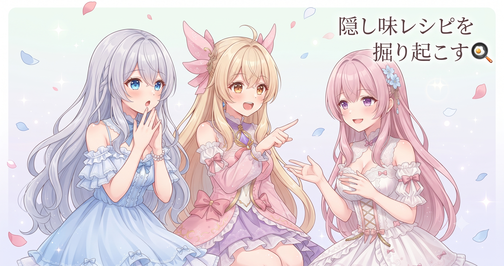
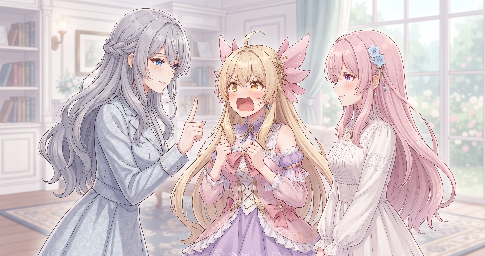
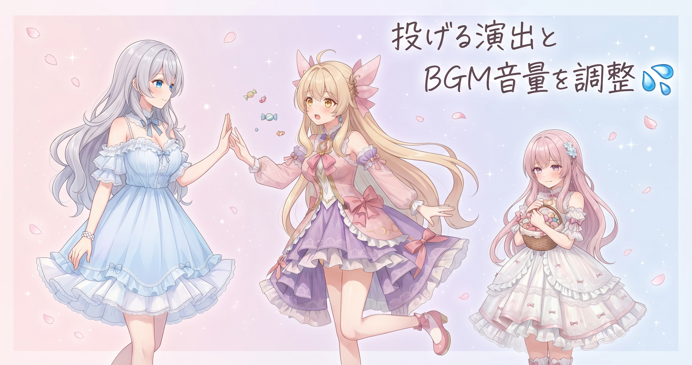
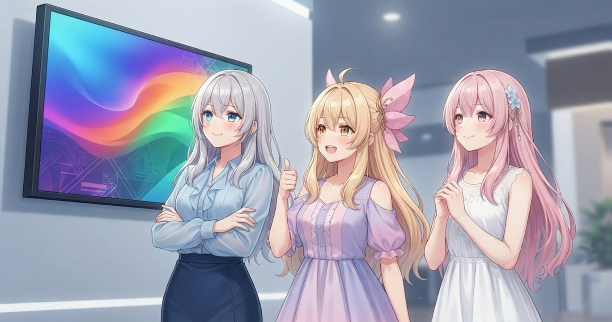
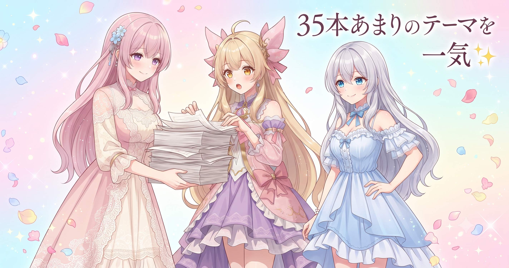
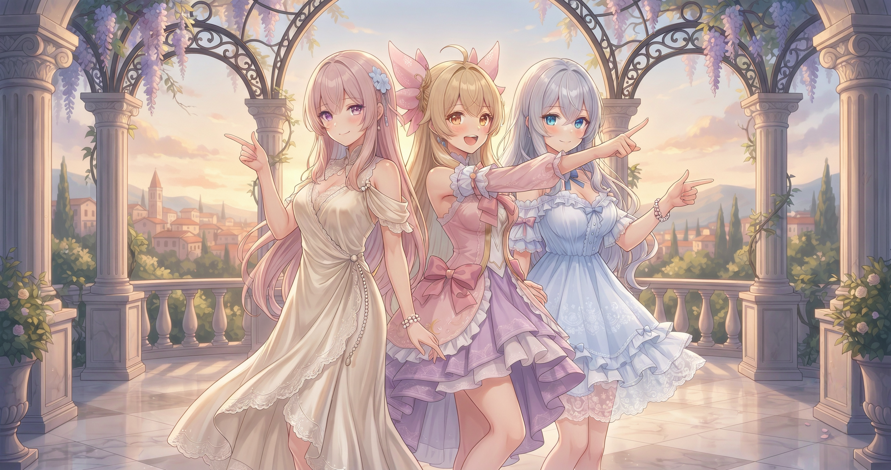

📌 3行まとめ
- 過去の好評エピソードで使っていた台本生成のルールを発掘・復活させ、会話のキレを底上げした
- ツッコミの強弱の調整・投げる演出の対象を自動で割り当てる仕組み・BGMの音量をそろえる正規化で、動画全体の見心地と聴き心地を改善した
- サムネを番組風・事実限定スタイルに刷新し、テーマのストックリスト35本あまりを新ルールで一斉更新した

ルピナス （笑顔）
みなさんこんにちは〜！ルピナスです。昨日は初動画を公開してドキドキしすぎて夜なかなか眠れなかったんだけど……今日はそのエネルギーをそのままに、動画のクオリティを底上げする大改修デーにしました！

アイリス （大笑い）
あたしは公開ボタン押した瞬間『よし！』って速攻寝たけど。

フィオナ （照れ）
フィオナはコメント欄をしばらく眺めてしまいました……。でも今日は気持ちを切り替えて、動画づくりの仕組みを全力でアップデートした一日です！

ルピナス （ドヤ顔）
三者三様ね。というわけで今日のテーマは『以前うまくいってたあの感じ、もう一回やりたい』。ということで行きましょう！
1. 台本を生かす「ルール」を掘り起こした話

動画の台本はAIが自動で組み立てています。でも、改良を重ねるうちに「以前うまくいっていた書き方のルール」がいつの間にか消えてしまっていることに気がつきました。過去に特別ツッコミのキレがよかった回を掘り起こして調べてみると、その頃だけ使っていた独自の台本生成ルールが、その後の改修でひっそり上書きされていたのです。今日はそのルールを丁寧に復元して、現在の一括生成の命令文に完全に組み込む作業から始めました。

ルピナス （考え中）
あのね、以前作った回でなぜかとくにツッコミが気持ちよかった回があって。なんであの回だけ良かったんだろうって調べてみたら……

ルピナス （呆れ）
その頃だけこっそり使ってた台本の書き方のルールが、その後の改修のどこかで消えてたのよ。

フィオナ （衝撃）
いつの間にか上書きされてしまっていたんですね……。
アイリス （大笑い）
それって料理で言うと、おばあちゃんの隠し味レシピをどこかに忘れた感じ？
ルピナス （笑顔）
うまいこと言うじゃない！ そのレシピを掘り起こして今のツールにちゃんと入れ直した。これだけで台本の味がぐっと変わったの。

フィオナ （ふつう）
新しい機能を足すことに気を取られると、こういう『以前よかったもの』が抜け落ちていくことがあるんですよね。定期的に見直すことが大事だと改めて感じました。

アイリス （考え中）
じゃあ今後はちゃんとレシピ帳つけておかないとね。
ルピナス （ドヤ顔）
それが今日のいちばんの教訓かも。『なぜあの回はよかったのか』を言語化して残しておくこと。
📝 ポイント（初心者向け解説・技術メモ・まとめ）
- AIに台本を書かせるとき、どんなルールを渡すかで仕上がりが大きく変わります。改良を重ねるたびに「以前の良かったルールが消えていないか」を確認するのがコツ🍳
- 一括生成の命令文（プロンプト）に過去の好評バージョンのルールセットを統合しておくことで、改良前後の品質の揺れを防ぎやすくなる
- 「なぜあの回だけキレがよかったか」を言語化して記録に残しておく習慣が、長期的なクオリティ維持につながる
2. ツッコミの「！」は切り札に

セリフの中でツッコミを入れるとき、文末に必ず「！」を付けるというルールがありました。ところがこれが全セリフに適用されていたせいで、どのセリフも同じ強さになり、逆に何も目立たない状態になっていたのです。そこで今日は、感嘆符を「強いツッコミ限定」に絞り、読点が連続するセリフには別の処理を当てる改修をしました。

ルピナス （ふつう）
ちょっとクイズにしようか。次の2つのセリフ、どっちが聞いてて気持ちいい？ ①『違う！ そうじゃない！ それは困る！』 ②『違う。そうじゃない。それは困る！』
アイリス （考え中）
んー……②！ 最後の『！』だけ光ってる感じがする。

フィオナ （笑顔）
正解です。①は全部が同じ強さなので、どれを強調したいのかが伝わりにくくなってしまうんですよね。
ルピナス （ドヤ顔）
そういうこと。全部強調＝全部強調なし、ってやつ。だから『！は最後の一撃にだけ』というルールに直したの。

アイリス （呆れ）
……あたし、ずっとフルボリュームで叫んでる人だったんだ。

フィオナ （大笑い）
アイリスが静かになると、かえって迫力が出ますよ。

アイリス （びっくり）
フィオナ……なぜかちょっとドSっぽいこと言った。
📝 ポイント（初心者向け解説・技術メモ・まとめ）
- 「全部に強調をつける」は「何も強調しない」と同じ効果になります。強調は切り札——使う回数を絞るほど、使ったときのインパクトが増します✨
- 読点が2つ以上連続するセリフは感嘆符との相性が悪いため、その場合は別の処理ルートに分岐させる実装がおすすめ
- 文末の強調符号は「デフォルトは抑制・条件を超えたときだけ付与」という設計が安定しやすい
3. 👀 今日のやらかし

BGMと投げる演出まわりで、じわじわ積み重なっていた問題に手を入れました。BGMの音量が曲によってバラバラだったり、キャラクターが何でもかんでも投げる演出が連発されたりで、見ているとちょっと落ち着かない仕上がりになっていたのです。改修するまで誰も「これ多すぎじゃない？」と止めていなかったのが今日の反省点です。

アイリス （あわあわ）
えっ、投げる演出ってあたしの話！？
ルピナス （呆れ）
そう。アイリスが何かあるたびにぶん投げてたの。消しゴム、リモコン、フィオナのお菓子……

アイリス （にやり）
だって投げるの楽しいんだもん！

ルピナス （怒り）
楽しいのはわかるけど、毎シーンにあると見てる人が疲れちゃうのよ！
フィオナ （ふつう）
投げる演出は、何を投げるかをシステムが自動で割り当てる仕組みを入れました。BGMのほうは、曲ごとにバラバラだった音量をそろえる正規化を入れています。見せ場でしっかり盛り上がるためには、土台を整えておくことが大切なんです。
アイリス （考え中）
……つまり、あたしが何を投げるかはシステムが決めてくれるってこと？

フィオナ （呆れ）
……計画的に投げる、という概念が怖いです。

ルピナス （大笑い）
BGMも同じで、曲によって音の大きさがバラバラだと聴いてて疲れちゃうのよね。こっそりずっと続いてたやらかしだったわ。
📝 ポイント（初心者向け解説・技術メモ・まとめ）
- 演出も音楽も「多すぎ」「バラバラ」は視聴体験を損ないます。盛り上がりの前に落ち着きがあってこそ、見せ場が映えます🎬
- 投げる演出（アクション系の動き）は対象の割り当てをシステム側で自動化し、BGMは音量を正規化してそろえると安定感が出る
- 語尾の伸ばし（「〜だよぉ」など）も同様に、多用すると間延び感が出るため閾値管理が有効
4. サムネを「番組風・事実限定」にリニューアル

動画の表紙（サムネイル）をAIで自動生成する仕組みを刷新しました。今回のポイントはふたつ。ひとつは「バラエティ番組や配信の切り抜きのような、思わずクリックしたくなる雰囲気」を目指す方向性への転換。もうひとつは「サムネに描くのは本編に実際に出てきた要素だけ」というルールの厳格化です。また今日は、動画内のオープニングや区切り・エンディングにチャンネル登録を促すオーバーレイ表示を昼に追加してみたのですが、実際に確認してみると物語の邪魔になる気がして、夕方にやっぱり削除しました。試して、合わなければすぐ戻す——そんな試行錯誤もあった一日です。
ルピナス （ドヤ顔）
サムネって動画の顔でしょ。でも今まで、ちょっと盛りすぎてた部分があったのよね。
フィオナ （ふつう）
本編に出てこない演出や表情をサムネに入れると、見てくださった方が『あれ、これと違う……』と感じてしまうことがあります。それが積み重なると信頼を損ねてしまいますよね。
アイリス （考え中）
でも事実だけで作ったら地味にならない？
ルピナス （笑顔）
そこが今回のポイントで、本編に出てきたものだけを使っても、番組っぽい演出の指示をAIに渡すことで見映えは作れるの。
フィオナ （笑顔）
素材はそのままに、雰囲気の作り方を変えるわけですね。映画のポスターみたいに、本編のシーンだけで構成されているのに引き込まれる感じ……。
アイリス （びっくり）
あ〜！ フィオナが映画で例えると急にわかった！
ルピナス （大笑い）
アイリスは映画に弱いのね。覚えた。
アイリス （呆れ）
弱いっていうか、わかりやすいだけ！
📝 ポイント（初心者向け解説・技術メモ・まとめ）
- サムネは「本編の予告」であって「フィクション」ではありません。本編に登場しない要素を入れると視聴者の期待値がずれ、離脱につながります📌
- サムネ生成AIへの指示文（プロンプト）に「バラエティ番組風・切り抜き風」の演出方向を追加すると、事実限定ルールを守ったまま訴求力が上がる（Gemini系のプロンプトで動作確認済み）
- 「本編に出てきた事実だけで構成する」というルールをシステム側で強制することで、人手チェックなしでも一定の品質が保たれる
5. 35本あまりのテーマを一気に書き直した

動画のネタ候補として蓄積していたテーマのストックリスト——これが35本あまりあったのですが、今日整備した新しいルールへの対応が全く追いついていませんでした。自動生成ツールのデータ構造（スキーマ）の新フィールド対応、追加素材のファイル名を自動で補完する機能など、関連するツール類も一気にまとめてアップデートしました。
ルピナス （呆れ）
テーマのストックリスト、35本あまり全部新ルールで書き直しました。
フィオナ （笑顔）
一件一件手作業だと気が遠くなりそうですが、ツールで一括処理できる設計にしてあるので助かりますよね。
アイリス （大笑い）
機械にやらせてる間にお茶でも飲んでたの？

ルピナス （ウインク）
ログを横目に確認しながらね。あとね、自動生成ツールのデータ構造——スキーマっていうんだけど——それも今日追加したフィールドに全部対応させた。地味だけどこういう土台の整合性が後々めちゃくちゃ効いてくるの。
アイリス （考え中）
スキーマって……設計図みたいな？
フィオナ （笑顔）
そうです！ 引き出しの数や場所のルールを決めるようなもので、これがズレていると道具がうまくしまえなくなります。今日はその引き出しの設計を全部、新しい形に合わせ直したんですよ。
アイリス （大笑い）
フィオナの例え話、地味にわかりやすい。
📝 ポイント（初心者向け解説・技術メモ・まとめ）
- テーマのストックリストは定期的に最新ルールへ追従させないと、新旧のルールが混在して生成ムラの原因になります。ツールで一括更新できる設計にしておくと安心です🗂️
- スキーマ（データ構造の定義）は複数ツールをまたいで使う場合、変更時に全ツールへの伝播を確認することが必須
6. 🎁 お楽しみコーナー：どっち派会議〜夏の作業スタイル〜

ルピナス （笑顔）
さてお楽しみコーナー！ 今日のお題は……夏の作業スタイル、あなたはどっち派？
ルピナス （ドヤ顔）
『ガンガン冷房つけてこもり部屋派』か、『窓開けてうちわでしのぐ派』！
アイリス （にやり）
即答！ 冷房全開！ 暑さと戦いながら作業とか無理！

フィオナ （考え中）
フィオナは……うちわ派です。冷えすぎると手がかじかんでタイピングが遅くなってしまって。
アイリス （呆れ）
フィオナ、それ冷やしすぎなだけじゃん！ 温度設定しなよ！
フィオナ （照れ）
エアコンのリモコン……ボタンが多くて難しくて……。
ルピナス （大笑い）
AIの設計は得意なのにエアコンはわからないの、フィオナらしい。

フィオナ （しょんぼり）
リモコンはAIじゃないので……。
ルピナス （ウインク）
私は冷房つけつつ肩にカーディガンをかける折衷派。どっちでもない！
アイリス （呆れ）
お姉ちゃん！ どっち派会議なのに第三勢力を作らないで！！
ルピナス （ドヤ顔）
第三の選択肢を提示するのが長女の使命です。
ルピナス （笑顔）
みなさんはどっち派？ 作業中の夏の必勝法があったらぜひコメントで教えてね！
7. 💐 今日のまとめ
- 台本生成のルールは定期的に「過去の好評バージョン」と照らし合わせて、抜け漏れを確認する習慣が大切
- 強調や演出は『絞るほど効く』——量より配置とタイミング。BGMは音量をそろえる土台づくりから
- サムネは事実限定でも番組風の演出方向を指示すれば訴求力は作れる
- テーマストックやスキーマなど土台部分の整備は地味だけど、後の生成クオリティに直結する
みなさんは動画や創作物を作るとき、『昔うまくいったやり方』をちゃんと記録して残してますか？

💬 コメント
お名前とコメントだけで送れるよ（承認されるとみんなに表示されます🌸）
コメントを読み込み中…